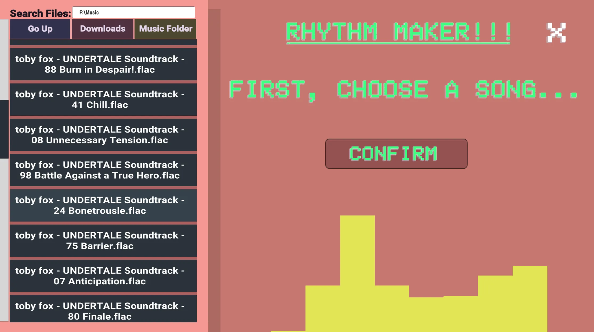
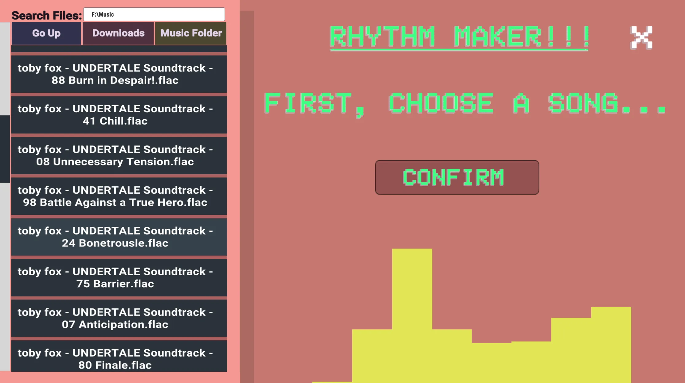

University Projects
Single-player, gameplay and coding focused projects
I worked on these projects and more between 2023-2025 to learn and practice
the skills needed to join the industry as a games programmer
Procedurally Generating Rhythm game
My rhythm game which works with any song.Made in Unity, the player inserts any audio of their choice, then selects their settings, and a rhythm game level will be generated, matching the tune of the chosen song.